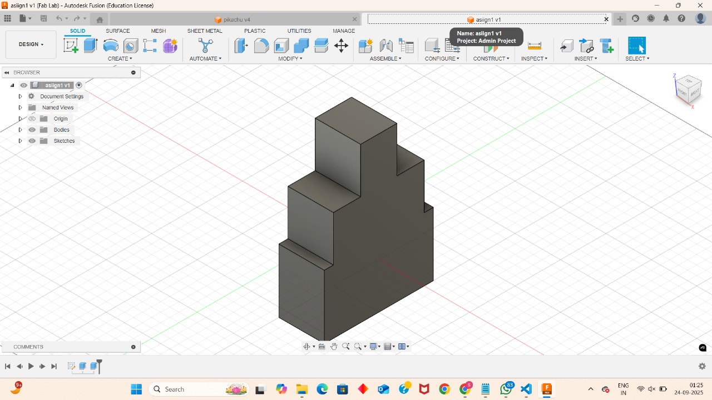
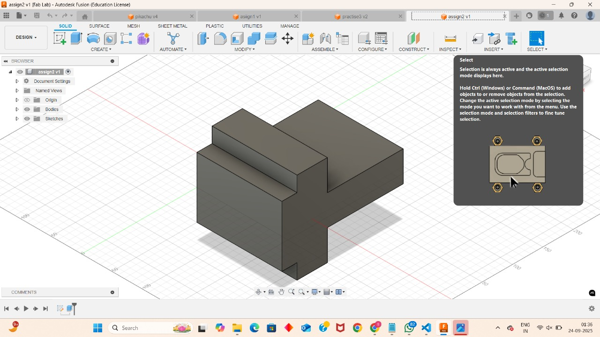
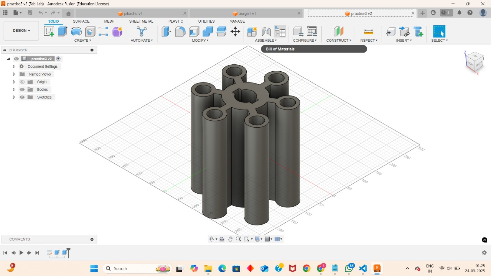
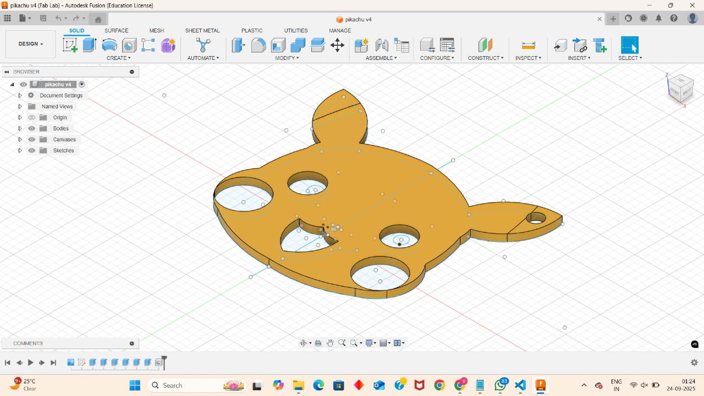

My CAD Learning Journey
Mastering the art of digital design and engineering
← Back to PortfolioDay 1
CAD BasicsIntroduction to CAD & Basic Modeling
I began by exploring the foundational concepts of Computer-Aided Design. I learned about the importance of CAD in engineering and design and the key differences between 2D and 3D CAD. I also became familiar with the workspace of popular software like **AutoCAD** and **SolidWorks**, and practiced using basic drawing commands such as Line, Circle, and Rectangle to create initial shapes.
Topics Covered:
- Importance of CAD in engineering & design
- Types of CAD: 2D CAD, 3D CAD
- Popular software: AutoCAD, SolidWorks, Fusion 360
- CAD workspace: menus, toolbars, drawing area
- Basic drawing commands: Line, Circle, Rectangle, Arc
Day 2
3D ModelingSketching and Basic Features
With a grasp of the basics, I dove deeper into creating models. I learned to create and manage sketches, and the critical role of using **constraints** to precisely define geometry. I then transformed these 2D sketches into 3D objects using features like **Extrude**, **Revolve**, and **Sweep**. I also learned how to refine my models using modifiers like **Fillet**, **Chamfer**, and **Shell** and how to use the feature tree to manage my design history.
Topics Covered:
- Creating & managing sketches
- Using constraints to define geometry
- Creating 3D features: Extrude, Revolve, Sweep, Loft
- Modifying features: Fillet, Chamfer, Shell
- Understanding and navigating the feature tree/history
- Best practices for creating robust sketches
Day 3
DocumentationDimensions & Annotations
Today was all about making my designs understandable for manufacturing. I focused on adding accurate dimensions and annotations to my drawings. This included linear, angular, and radial dimensions, as well as text annotations for labeling parts. I also learned about using leaders and hatching to create clear and professional documentation, adhering to proper drawing standards like units and scale.
Topics Covered:
- Adding various dimensions: linear, angular, radius
- Creating and formatting text annotations and leaders
- Using hatching to indicate cut sections
- Understanding and applying drawing standards: units, scale
- Setting up a professional drawing sheet with title block
- Dimensioning strategies for clarity and manufacturability
Day 4
2D CADAdvanced 2D CAD Techniques
I returned to 2D CAD to learn advanced techniques for creating more complex geometry. I worked with **polylines** and **splines** to create intricate curves and organic shapes. I also mastered essential modification tools like **Trim**, **Extend**, and **Offset**. A key learning was using **Blocks** to create reusable components, and utilizing layouts and paper space for professional print outputs.

Topics Covered:
- Creating complex curves with polylines and splines
- Advanced modification tools: Trim, Extend, Offset
- Using Fillet and Chamfer on 2D geometry
- Creating and managing blocks for design efficiency
- Working with layouts and paper space for plotting
- External references (Xrefs) for linked drawings
Day 5
3D CADIntroduction to 3D CAD
I took the big leap from 2D to 3D. I learned the fundamental differences in workflow and thinking, and how to navigate the 3D workspace. I practiced creating my first true 3D objects using tools like **Extrude**, **Revolve**, **Loft**, and **Sweep**. I also gained a solid understanding of 3D coordinates, axes, and planes, which are essential for precise positioning and modeling in a three-dimensional space.
Topics Covered:
- Difference between 2D & 3D CAD workflows
- Navigating the 3D workspace, views, and orthographic projections
- Creating 3D objects from 2D profiles using Extrude, Revolve, Loft, Sweep
- Understanding 3D coordinates, axes, and planes
- Controlling the view with orbit and view cube tools
- Creating custom coordinate systems for complex parts
Day 6
3D Modeling3D Modeling Techniques
Building on my 3D skills, I learned how to modify and manipulate my models in new ways. I practiced using **Move**, **Rotate**, and **Scale** to position and resize objects. A key part of this day was mastering boolean operations like **Union**, **Subtract**, and **Intersect** to combine or cut parts. I also applied **Fillet** and **Chamfer** in 3D, and got a first look at creating **assemblies** by combining multiple components.
Topics Covered:
- Modifying models with Move, Rotate, Scale commands
- Combining objects with boolean operations: Union, Subtract, Intersect
- Applying Fillet & Chamfer to 3D solid edges
- Introduction to creating assemblies with multiple components
- Using layers and properties for organization
- Creating a simple product design using learned techniques
Day 7
RenderingRendering & Visualization
To finish my first week, I focused on creating professional-grade presentations of my work. I learned how to apply realistic materials and textures to my models, set up proper lighting, and configure camera angles to produce stunning, photorealistic renders. This process transforms a technical CAD model into a visually appealing image for portfolios and presentations, bringing my designs to life.

Topics Covered:
- Applying materials and textures to 3D models
- Setting up a scene with lighting and environment effects
- Adjusting camera angles and perspective
- Rendering settings and quality control
- Generating high-resolution images for presentations
- The role of rendering in product marketing and design review